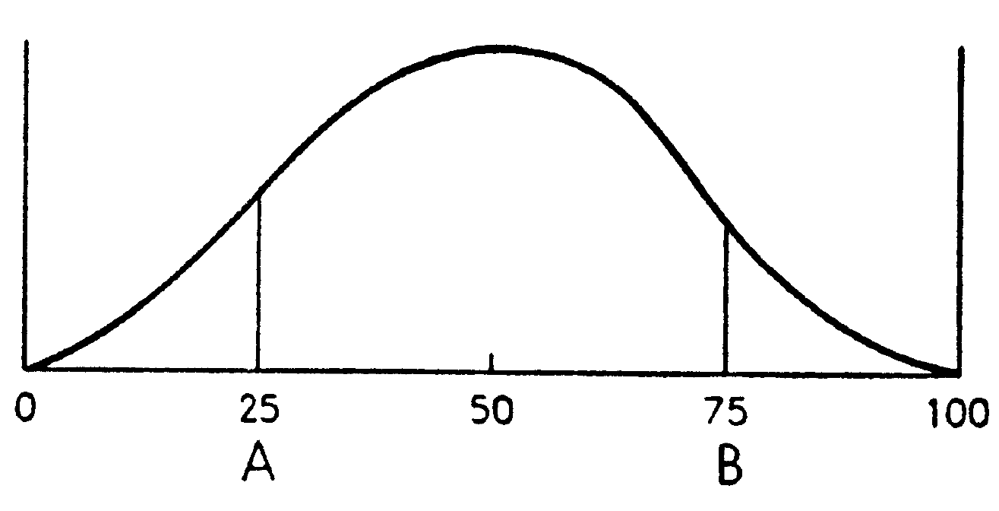
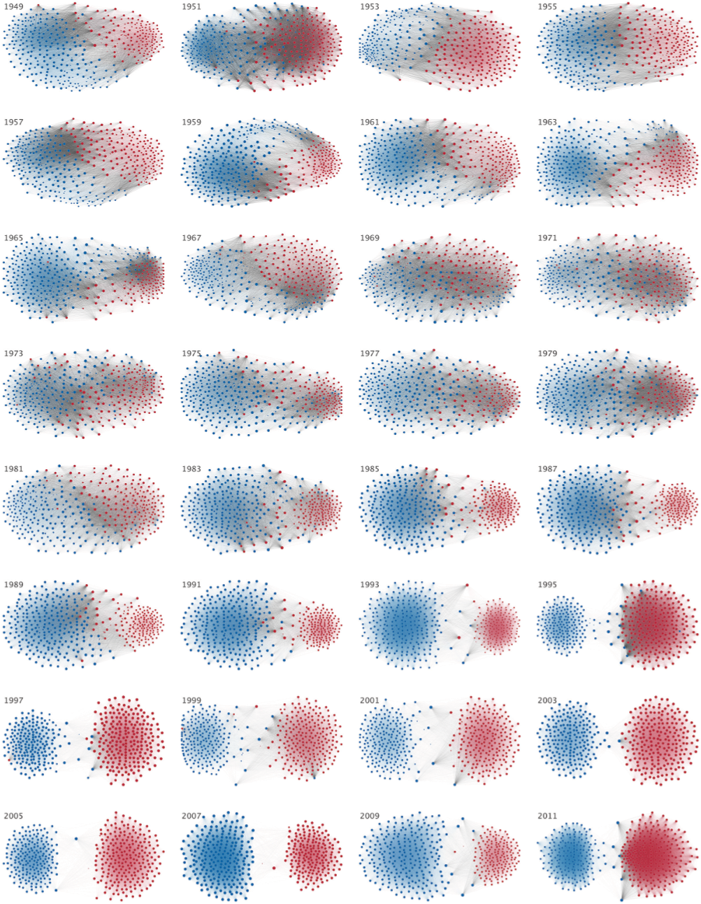

Economía Política
Unidad 4. No taxation without representation. Partidos, votantes y competencia electoral
Politicians neither love nor hate. Interest, not sentiment, governs them.
[Fourth Earl of Chesterfield (1748)]
Democracia representativa
- Democracia representativa y competencia electoral
- Políticos como representantes
- Modelos de competencia electoral
Democracia representativa
- En la práctica, la democracia directa es inviable para estructurar y organizar las decisiones colectivas
- Cuando la polity es grande \(\longrightarrow\) se deben elegir representantes
- Principales aspectos relevantes
- Conducta de representantes pre- y post- campaña
- Conducta de votantes ante oferta electoral
- Características de los resultados de política
Votantes y representantes
- Caracterizamos a los votantes en función de maximizar su utilidad que depnde de la canasta de bienes que consume
- Caracterizamos a los representantes en función de…
- …intereses \(\longrightarrow\) ¿pero cuáles?
- Punto ideal de política
- Ideología
- Ganar votos
- …intereses \(\longrightarrow\) ¿pero cuáles?
Modelo de localización
- En 1929, Hotelling observó que las empresas competidoras solían imitar la calidad de los bienes y la localización. ¿Por qué teniendo un enorme mercado geográfico para localizarse se establecen tan cerca (por qué imitaban calidad del producto)?
- Ejemplo \(\longrightarrow\) vendedores de helados en una playa. ¿Donde deben localizarse a lo largo de una playa de 1km si los individuos están distribuidos uniformemente?
- Esto se observa en la vida real \(\longrightarrow\) heladeras en supermercados; negocios en una misma cuadra/zona.
MCE: Downs
- Modelo tradicional de competencia electoral
- Unidimensional
- Rol e importancia del votante mediano
- Limiticaciones y realismo
MCE: Downs
- Supuestos contextuales:
- Cada candidato político busca ganar para obtener ingreso, prestigio y poder que viene con el cargo
- El candidato ganador tiene control completo de sus acciones hasta la próxima eleccion
- Poderes económicos del gobierno ilimitados –dentro del marco democrático. El único límite es político \(\longrightarrow\) no puede restringir la libertad política
- Cada agente en el modelo –votante, candidato o coalicion- es racional en todo momento
MCE: Downs (cont.)
- Basado en esto desarrolló el modelo espacial de competencia electoral
- Continuo ideológico unidimensional \([0,100]\), entre economía completamente socializada (0) y economía totalmente privada (100).
- Supuesto \(\longrightarrow\) todo puede reducirse a la ideología –unidimensional.
Los partidos políticos en una democracia formulan la política estrictamente como un medio para obtener votos (y ganar elecciones). Para Downs los partidos políticos no son mas que comerciantes vendiendo políticas por votos.
MCE: Downs (cont.)
- Supuestos claves sobre candidatos:
- Cumplen sus promesas –se resuelve el equilibrio político (modelo no dinámico)
- Son “oportunistas” \(\longrightarrow\) sólo les interesa las rentas del poder, no las políticas implementadas
- Sólo relevante en contexto pre-electoral
- Tenga en cuenta que en la práctica pre-electoral y post-electoral están vinculados
- Foco nuevamente es el conflicto entre preferencias
MCE: Downs (cont.)
- Dos candidatos, \(A\) y \(B\), cada uno oportunista. Ganar elección brinda \(R\)
- Cada candidato anuncia \(q_{A}\) y \(q_{B}\) para maximizar su fn. objetivo: \[\begin{align} p_{p}.R \end{align}\]
- donde \(p_{p}\) es la probabilidad de ganar la elección para el candidato \(P \in {A,B}\). Esta depende de la política anunciada
- Una vez resuelta elección, candidato implementa política anunciada
MCE: Downs (cont.)
- Suponga que \(p_{A}(q_{A},q_{B})\) es la prob. que \(A\) gane la elección cuando se anuncian \((q_{A},q_{B})\) y \(p_{B}(q_{A},q_{B})=1-(q_{A},q_{B})\) es la prob. que \(B\) gane
- Entonces:
- \(p_{A}(q_{A},q_{B})=1\) si mayoría prefiere \(q_{A}\) a \(q_{B}\)
- \(p_{A}(q_{A},q_{B})=0\) si mayoría prefiere \(q_{B}\) a \(q_{A}\)
- Preferencias son unimodales y vector de política unidimensional
MCE: Downs (cont.)
- El equilibrio queda descripto por las preferencias del mediano, \(V^{M}(q)\) \[\begin{align} p_{A}(q_{A},q_{B})= \begin{cases} 1 & si \quad V_{M}(q_{A}) > V_{M}(q_{B}) \\ \frac{1}{2} & si \quad V_{M}(q_{A}) = V_{M}(q_{B}) \\ 0 & si \quad V_{M}(q_{A}) < V_{M}(q_{B}) \\ \end{cases} \end{align}\]
MCE: Downs (cont.)
- Candidatos enfrentan el siguiente problema de decidir \[\begin{align} A:& \max_{q_{A}} p_{A}(q_{A},q_{B}).R \\ B:& \max_{q_{B}} 1-p_{A}(q_{A},q_{B}).R \\ \end{align}\]
- En equilibrio, ambos candidatos convergen y eligen (anuncian) la política preferida por el mediano, \(q_{M}^{*}\).
- Demostración por contradicción
MCE: Downs (cont.)
- Suponga candidatos eligen otras, \(q_{A}<q_{B}<q_{M}^{*}\) \(\longrightarrow\) mediano y todos a su derecha prefieren \(q_{B}\)
- Misma política, \(q_{A}=q_{B}\)
- Una a cada lado (\(V^{M}(q_{A})=V^{M}(q_{A})\))
- \(q_{A} \leq q_{M}^{*} \leq q_{B}\)
- \(q_{A} \geq q_{M}^{*} \geq q_{B}\)
- En cualquier caso, si \(q_{P} \neq q_{M}^{*}\) \(\longrightarrow\) cualquier partido tiene incentivo para acercarse mas a mediano; desviaciones cesan cuando se está en \(q_{M}^{*}\)
MCE: Downs (cont.)
Utilidad de un individuo con posición ideal \(x^{*}\) como funcion de \(x\)
MCE: Downs (cont.)

Decidiendo qué política fijar
- Ciudadanos cuyas posición favorita es \(\frac{1}{2}(x_{1}+x_{2})\) dividen sus votos por igual entre \(x_{1}\) y \(x_{2}\).
- Jugadores son los candidatos, acciones el conjunto de posiciones posibles y los payoffs son \(n\succ k \succ 0\)
MCE Downs: Aplicación
- Resultado Downs \(\longrightarrow\) válido con 2 (dos) partidos
- En democracia multipartido no aplica
- Suponga:
- Sea \(Q=[0,1]\) unidimensional de política
- \(A\), \(B\) y \(C\) compiten por un mismo cargo. Si empatan, sorteo
- Candidatos anuncian pol \((q_{A},q_{B},q_{C})\)=\((\frac{1}{11},\frac{6}{11},\frac{9}{11})\) simultánea y no cooperativa
- Población compuesta por \(N \in {1,...,11}\) votantes con preferencias unimodales \[\begin{align} u_{i}(q)=-|q-q^{i}| \quad donde \quad q^{i}=\frac{i}{11} \end{align}\]
MCE Downs: Aplicación (cont.)
- Si todos \(i \in N\) votan en forma sincera, \(A\) obtiene 3 votos, \(B\) 4 votos, y \(C\) 4 votos por lo que \(B\) y \(C\) tienen 1/2 probabilidad de ganar
- \(i=1\) prefiere política anunciada por \(B\) por lo que su mejor respuesta es votar por \(B\) –dado que el resto de votantes vota sinceramente!
- Dado que no se puede asumir votación sincera con 3 o mas candidatos, el problema se vuelve bastante mas complejo
MCE Downs: Interpretación
- Note que Downs no requiere que candidatos siempre vayan al centro
- Si los votantes se distribuyen uniformemente a lo largo del eje \(x\) y el candidato A originalmente se ubica en A (25) y y el andidato B se ubica en B (75), a ambos les conviene moverse hacia 50.
- Si la distribución de votantes cambia, los partidos: a) tiende a ir a los extremos; b) tenderan a posicionarse alrededor de nucleos de votantes
MCE Downs: Interpretación (cont.)
Distribución unimodal de preferencias
MCE Downs: Interpretación (cont.)
Distribución bimodal de preferencias
MCE Downs: Interpretación (cont.)
Distribución multimodal de preferencias
MCE Downs: Interpretación (cont.)
- Políticas estables en una democracia bi-partidista requiere distribucion normal \(\longrightarrow\) los partidos tienden a parecerse. La identidad del partido no importa.
- Si votantes polarizados, cambio en identidad del ganador implica cambio en la política. Si continuidad \(\longrightarrow\) oposición busca desestabilizar; si alternancia \(\longrightarrow\) inestabilidad
- Si distribución multimodal \(\longrightarrow\) sistema multi-partido. Cada partido se posiciona en una moda. Mayor rango de opciones, mayor rol de ideología y menor coherencia \(\longrightarrow\) gobierno de coaliciones
MCE Downs: Evidencia
Thus politicians in our model never seek office as a means of carrying out particular policies: their only goal is to reap the rewards of holding office . They treat policies purely as a means to the attainment of their private ends, which they can reach only by being elected.
[Anthony Downs, An economic theory of democracy}]
MCE Downs: Evidencia (cont.)
Ley 1. Los sistemas de votación por mayoría en una elección conducen a un sistema bipartidista
Ley 2. Los sistemas de votación por representación proporcional conducen a un sistema multipartidista.
Ley 3. Los sistemas de votación por mayoría en 2 vueltas llevan a un sistema multipartido con tendencia a formar coaliciones
MCE Downs: Evidencia (cont.)
| Country | no. of elections | ENP | Sistema |
|---|---|---|---|
| Canada | 21 | 3.07 | mayoría |
| UK | 17 | 2.37 | mayoría |
| US | 17 | 1.99 | mayoría |
| Australia | 27 | 2.60 | 2da vuelta |
| France | 14 | 4.31 | 2da vuelta |
| Argentina | 4 | 4.47 | PR |
| Brazil | 7 | 9.33 | PR |
MCE Downs: Evidencia (cont.)
- Si se cumple Downs, se esperaría un bajo grado de polarización en las plataformas políticas de la vida real.
- Datos del Comparative Manifesto Dataset (2015), polarización medida en escala I-D.
- Disponibilidad del “RiLe Index” [Laver and Budge (1992)] \(\longrightarrow\) indice que mide la posición izquierda-derecha de los partidos
- Varía entre -100 y 100 y se construye como \(rile=R-L\) donde \(R\) es la suma (porcentajes) de variables de derecha y \(L\) la suma de (porcentajes) de variables de izquierda.
MCE Downs: Evidencia (cont.)
Variables que definen el RiLe Index
MCE Downs: Evidencia (cont.)
| Country | no. Elections | polarization |
|---|---|---|
| Canada | 21 | 0.10 |
| UK | 17 | 0.15 |
| US | 17 | 0.08 |
| Australia | 27 | 0.16 |
| France | 14 | 0.21 |
MCE Downs: Evidencia (cont.)

Polarización partidaria (RiLe Index) - USA
MCE Downs: Evidencia (cont.)
Polarización partidaria (RiLe Index) - Alemania
MCE Downs: Evidencia (cont.)

Polarización partidaria (RiLe Index) - South Africa
MCE Downs: Evidencia (cont.)
- No sólo puede observarse polarización en relacióna propuestas y plataformas partidarias
- También en cierto modo la polarización puede observarse en los recintos legislativos
- Representantes electos son tanto ejecutivos como legislativos
- Primer gráfico usa datos de Voteview. El grafo de redes de un paper [Andris et al (2015)] que estudia cooperación entre legisladores, tanto intra- como inter-partido
MCE Downs: Evidencia (cont.)
Polarización legislativa en cámara baja (House) - USA
MCE Downs: Evidencia (cont.)

Polarización legislativa en cámara alta (Senate) - USA
MCE Downs: Evidencia (cont.)
Cooperación y partidismo en Congreso - USA
Votación probabilística (MVP)
- Problemas y limitaciones de MCE Downs
- Votación probabilísta: incorporando dimensiones
- Rol e importancia del votante swing
- ¿Puede la ideología (simpatía) ser determinante?
TVM: Realismo y ajuste
- Sabemos que el TVM es útil pero en muchas ocasiones supuestos no aplicables
- Tema clave \(\longrightarrow\) multidimensional de decisiones políticas
- El modelo de votación probabilística (MVP) permite relajar algunos supuestos e incorporar más realismo
MVP: Intuición y supuestos
- Recordemos que \[\begin{align} p_{A}^{i}(q_{A},q_{B})= \begin{cases} 1 & si \quad V^{i}(q_{A}) > V^{i}(q_{B}) \\ \frac{1}{2} & si \quad V^{i}(q_{A}) = V^{i}(q_{B}) \\ 0 & si \quad V^{i}(q_{A}) < V^{i}(q_{B}) \\ \end{cases} \end{align}\]
- Es decir, prob de que \(i\) vote por \(A\) cuando plataformas son \((q_{A},q_{B})\) no es continua –saltos discretos
- Fn objetivo de candidatos discontinuas en espacio de políticas
MVP: Intuición y supuestos (cont.)
- Por esto, candidatos incentivo a proponer nuevas \(q_{i}\) repetidamente
- Proceso continúa ad-infinitum si: 1) preferencias no son de pico único; 2) manipulación de agenda y voto estratégico
- El MVP suaviza estas funciones discontinuas aún con espacios de po´litica multidimensionales
MVP: Intuición y supuestos (cont.)
- Diferentes motivaciones (“microfundamentos”) para el MVP
- Individuos motivados por dos dimensiones:
- Políticas –\(q_{i}\)
- Ideología –\(\sigma^{ij}\)
- NOTA: Segunda dimensión No necesariamente debe ser “ideología” en sentido estricto
- Puede ser cualquier elemento que haga que un votante tenga una tendencia a votar por tal o cual candidato
MVP: Modelo básico
- Sociedad compuesta por número \(J\) de grupos diferentes. Población total normalizada a 1. Cada grupo tiene una cantidad/fracción \(\alpha_{j}\) de individuos tal que \(\sum_{j=1}^{J}\alpha_{j}=1\)
- Individuos dentro de cada grupo son iguales con excepción de su preferencia “ideológica”
- Dos candidatos \(A\) y \(B\) compiten ofreciendo políticas contenido en el vector \(q\).
MVP: Modelo básico (cont.)
- Sea \(\pi_{P}^{j}\) la fracción de votantes en grupo \(j\) que vota por \(P\) con \(P \in {A,B}\). Proporción de votos \(\pi_{P}\) que espera obtener:
\[\begin{align} \pi_{P}=\sum_{j=1}^{J}\alpha_{j}\pi_{P}^{j} \end{align}\]
- En MCE Downs, forma de cada \(\pi_{P}^{j}\) parecida anterior pero saltos de continuidad. Si es unidimensional, gana \(q_{m}\). Si es multidimensional, ciclos interminables
MVP: Preferencias
- Cada \(i\) en \(j\) tiene las preferencias \[\begin{align} V^{ij}=V^{j}(\mathbf{q})+\sigma^{ij}(P) \end{align}\]
- \(V^{j}(\mathbf{q})\) es utilidad indirecta de individuos de grupo \(j\) y \(\sigma^{ij}(P)\) beneficios para votante \(i\) en grupo \(j\) si gana \(P\). Sea \(p_{A}^{ij}(\mathbf{q}_{A},\mathbf{q}_{B})\) la prob que \(i\) de \(j\) vote por \(A\):
\[\begin{align} p_{A}^{ij}(\mathbf{q}_{A},\mathbf{q}_{B})= \begin{cases} 1 & si \quad V^{j}(\mathbf{q}_{A})+\sigma^{ij}(A) > V^{j}(\mathbf{q}_{B})+\sigma^{ij}(B) \\ \frac{1}{2} & si \quad V^{j}(\mathbf{q}_{A})+\sigma^{ij}(A) = V^{j}(\mathbf{q}_{B})+\sigma^{ij}(B) \\ 0 & si \quad V^{j}(\mathbf{q}_{A})+\sigma^{ij}(A) < V^{j}(\mathbf{q}_{B})+\sigma^{ij}(B) \\ \end{cases} \end{align}\]
MVP: Preferencias (cont.)
- Definamos \(\sigma^{ij}=\sigma^{ij}(B)-\sigma^{ij}(A)\) como la preferencia ideológica relativa por B. Entonces:
\[\begin{align} p^{ij}(\mathbf{q}_{A},\mathbf{q}_{B})= \begin{cases} 1 & si \quad V^{j}(\mathbf{q}_{A})-V^{j}(\mathbf{q}_{B}) \geq \sigma^{ij} \\ \frac{1}{2} & si \quad V^{j}(\mathbf{q}_{A})-V^{j}(\mathbf{q}_{B}) = \sigma^{ij} \\ 0 & si \quad V^{j}(\mathbf{q}_{A})-V^{j}(\mathbf{q}_{B}) \leq \sigma^{ij} \\ \end{cases} \end{align}\] - Votante \(i\) sólo votará por \(A\) si los beneficios económicos que recibe compensan su preferencia ideológica - Fn objetivo de políticos se vuelve continua por incertidumbre sobre distribución de preferencias ideológicas
MVP: Preferencias (cont.)
- Distribución de \(\sigma^{j}\) dada por \(F^{j}\) definida para cada grupo \(j\) sobre intervalo \((-\infty,\infty)\) con fn de densidad \(f^{i}\)
- Fracción de votantes en grupo \(j\) que votarán por \(A\) es \[\begin{align} \pi_{A}^{j}=F^{j}(V^{j}(\mathbf{q}_{A})-V^{j}(\mathbf{q}_{b}))=\int_{-\infty}^{(V^{j}(\mathbf{q}_{A})-V^{j}(\mathbf{q}_{b}))}f(\sigma^{ij})d\sigma^{ij} \end{align}\]
- Punto \(\longrightarrow\) para cada \(j\) un individuo \(i\) con \(\sigma^{ij}\) crítico, \(\sigma^{j*}\) igual a \(V^{j}(\mathbf{q}_{A})-V^{j}(\mathbf{q}_{b})\) que divide a la población entre los votan por A y los que votan por B
- Indiferente entre A y B \(\longrightarrow\) swing voter
MVP: Preferencias (cont.)

Distribución de sesgos ideológicos
MVP: Propuestas de política y votos
- Agregamos para cada grupo de votantes, fracción de votos que recibe A: \[\begin{align} \pi_{A}=\sum_{j=1}^{J}\alpha^{j}\pi_{A}^{j}=\sum_{j=1}^{J}\alpha^{j}F^{j}(V^{j}(\mathbf{q}_{A})-V^{j}(\mathbf{q}_{b})) \end{align}\]
- Recuerde:
- Al candidato sólo le interesa ganar (maximizar \(\pi_{P}\))
- Anuncio de políticas simultáneo(compromiso perfecto)
- Debemos encontrar fn. de reacción para candidato (a través de CPO)
MVP: Propuestas de políticas (cont.)
- Funciones de reacción de candidatos son simétricas: \[\begin{align} 0=\sum_{j=1}^{J}\alpha^{j}f^{j}(V^{j}(\mathbf{q}_{A})-V^{j}(\mathbf{q}_{b}))\frac{\partial(V^{j}(\mathbf{q}(A)))}{\partial(\mathbf{q}(A))} \\ 0=\sum_{j=1}^{J}\alpha^{j}f^{j}(V^{j}(\mathbf{q}_{A})-V^{j}(\mathbf{q}_{b}))\frac{\partial(V^{j}(\mathbf{q}(B)))}{\partial(\mathbf{q}(B))} \\ \end{align}\]
MVP: Propuestas de políticas y votos (cont.)
- Por esta razón, \(q_{i}\) cada candidato…es la misma!. Convergencia donde \(\mathbf{q}_{A}=\mathbf{q}_{B}=\mathbf{q}\): \[\begin{align} 0=\sum_{j=1}^{J}\alpha^{j}f^{j}(0)\frac{\partial{V^{j}(\mathbf{q})}}{\partial{\mathbf{q}}} \end{align}\]
MVP: Equilibrio e implicancias
- Note que la anterior solución equivale a solucionar un problema de maximización de fn. de bienestar social ponderada \[\begin{align} \Omega=\sum_{j=1}^{J}\omega^{j}V^{j}(\mathbf{q}) \end{align}\]
- donde el peso \(\omega^{j}\) es \(\alpha^{j}f^{j}(0)\) con \(f^{j}(0)\) la densidad del “sesgo ideológico” para c/u de grupos en el punto en el que ambos ofrecen la misma política
- Todos tienen un voto pero… algunos más poderosos que otros: 1) grupos más numerosos, \(\alpha^{j}\) mayor; 2) grupos menos ideológicos, \(f^{j}(0)\)
MVP: Equilibrio e implicancias (cont.)

Distribución de sesgos ideológicos
MVP: Caso particular, 3 grupos sociales
- Caso particular del modelo anterior con 3 (tres) grupos sociales. Sociedad compuesta por 3 (tres) grupos de individuos \((J \in {R,M,P})\)
- Cada grupo conformado por número \(\alpha^{j}\) de individuos y población total normalizada a 1, \(\sum_{j}\alpha^{j}=1\)
- Individuos de cada grupo tienen mismo ingreso, \(y^{j}\) pero existen diferencias entre ingresos entre grupos
- suponemos \(y^{R}>y^{M}>y^{P}\)
- El ingreso medio es \(\sum_{j}\alpha^{j}y^{j}=\bar{y}\)
MVP: Caso particular, 3 grupos sociales (cont.)
- Las preferencias de los agentes son:
\[\begin{equation} V^{i,j}=V^{j}(\mathbf{q})+\sigma^{i,j}(P)+\delta(P) \end{equation}\]
- \(\sigma^{i,j}(P)\) es la preferencia ideológica del individuo y \(\delta(P)\) mide preferencia promedio en la población como un todo (“shock agregado de popularidad”) –carisma, eventos inesperados, escándalos.
MVP: Caso particular, 3 grupos sociales (cont.)
- Simplificando:
\[\begin{align} \sigma^{i,j}(B)-\sigma^{i,j}(A)&=\sigma^{i,j} \\ \delta(B)-\delta(A)&=\delta \end{align}\]
- Miden preferencia relativa para \(i\) en grupo \(j\) y para la población en general
- Suponemos que \(\sigma^{i,j}\) y \(\delta\) siguen una distribución uniforme simétrica alrededor de cero
MVP: Caso particular, 3 grupos sociales (cont.)
Distribución de sesgos ideológicos al interior de cada grupo
MVP: Caso particular, 3 grupos sociales (cont.)
Distribución del shock agregado de popularidad
MVP: Caso particular, 3 grupos sociales (cont.)
- Densidad para ideología individual viene dada por parámetro \(\phi^{j}\) y definida sobre el intervalo \([-\frac{1}{2\phi^{j}},-\frac{1}{2\phi^{j}}]\). Para el shock agregado, la densidad es \(\psi\) definida sobre \([-\frac{1}{2\psi},-\frac{1}{2\psi}]\)
- Candidatos anuncian simultáneamente plataformas de política –sólo conocen las preferencias de los electores y las distribuciones de paramétros de ideología y del shock de popularidad pero no sus valores realizados
- Luego se conoce el valor realizado de \(\delta\)
MVP: Caso particular, 3 grupos sociales (cont.)
- Buscamos al votante pivotal –swing-voter- de cada grupo \(j\) \[\begin{equation} \tilde{\sigma^{j}}=V^{j}(\mathbf{q_{A}})-V^{j}(\mathbf{q_{B}})-\delta \end{equation}\]
- es aquel votante cuyo sesgo ideológico \(\tilde{\sigma^{j}}\) lo hace indiferente entre los dos candidatos
- electores con \(\sigma^{i,j} < \tilde{\sigma^{j}}\) prefieren votar a \(A\)
- calculamos \(\pi^{j}_{A}\), fracción de votantes de \(j\) que votan por A como el area bajo la fn. de densidad
MVP: Caso particular, 3 grupos sociales (cont.)
Proporción de individuos que votan por A en el grupo j
MVP: Caso particular, 3 grupos sociales (cont.)
\[\begin{align} \pi^{j}_{A}&=\int_{-\frac{1}{2\phi^{j}}}^{V^{j}(\mathbf{q_{A}})-V^{j}(\mathbf{q_{B}})-\delta}\phi^{j}d\sigma^{i,j}=\phi^{j}[V^{j}(\mathbf{q_{A}})-V^{j}(\mathbf{q_{B}})-\delta+\frac{1}{2\phi^{j}}] \\ \pi^{j}_{A}&=\phi^{j}\tilde{\sigma^{j}}+\frac{1}{2} \end{align}\] - y agregando sobre todos los grupos: \[\begin{equation} \pi_{A}=\sum_{j}\alpha^{j}[\phi^{j}\tilde{\sigma^{j}}+\frac{1}{2}] \end{equation}\]
MVP: Caso particular, 3 grupos sociales (cont.)
- El resultado final para la probabilidad del partido A de ganar la eleccion en función de las plataformas de política es:
\[\begin{equation} p_{A}(\mathbf{q_{A}},\mathbf{q_{B}})=\frac{1}{2}+\frac{\psi}{\phi}[\sum_{j}\alpha^{j}\phi^{j}[V^{j}(\mathbf{q_{A}})-V^{j}(\mathbf{q_{B}})]] \end{equation}\]
- note que esta probabilidad es una función continua de las distancias entras las plataformas de los candidatos
MVP: Caso particular, 3 grupos sociales (cont.)
- Para candidato A, problema es maximizar esa probabilidad, la CPO es
\[\begin{align} \frac{\psi}{\phi}[\sum_{j}\alpha^{j}\phi^{j}\frac{\partial{V^{j}(\mathbf{q_{A}})}}{\partial{\mathbf{q_{A}}}}]=0 \\ \frac{\psi}{\phi}[\sum_{j}\alpha^{j}\phi^{j}\frac{\partial{V^{j}(\mathbf{q_{B}})}}{\partial{\mathbf{q_{B}}}}]=0 \end{align}\]
- Problema simétrico –convergen a misma \(q\). Pero reciben más ponderación: a) grupos más numerosos; b) los con mayor densidad en sus sesgos ideológicos
Nota sobre polarización
- Medición de polarización
- Problemas metodológicos
- Evidencia de preferencias (sesgos) ideológicos
MVP: Midiendo polarización
El paper de Esteban and Ray (1994) desarrolló por primera vez una metodología para medir polarización. Prueban que cualquier medida de polarización que cumpla con los axiomas propuestos debe ser de la forma \(P(\pi,y)=\gamma \sum_{i=1}^{n} \sum_{i=1}^{n} \pi_{i}^{1+v}\pi_{j}|y_{i}-y_{j}|\). En esta fórmula \(\kappa\) es una constante multiplicativa orientada a nominalización. En cambio \(v\) es un parámetro de sensibilidad y \(\pi_{i}\) son participaciones/totales de población de cada grupo. ¿Cómo interpretar el parámetro \(v\)? Mide la sensibilidad de \(P\) ante cambios en el tamaño de los grupos. [NOTA: Compare esta medida con un Gini. Los pesos de los grupos poblacionales son clave. A mayor \(v\), mas diferencia entre Gini y \(P\)].
MVP: Midiendo polarización (cont.)
MVP: Midiendo polarización (cont.)
- Paper de Draca and Schwarz (2021) identifica polarización ideológica reconociendo cuatro tipos ideológicos (hacen “latent dirichlet allocation”)
- Liberal de centro
- Conservador de centro
- Anarquista de izquierda
- Anarquista de derecha
- Otro paper de Boxell et all (2020) mide e identifica polarización afectiva –refiere al grado en que individuos rechazan más fuertemente a otros partidos que al suyo. En ambos casos, evidencia de polarización es mixta. No todos los países ni en todos los casos.
MVP: Midiendo polarización (cont.)
Polarización ideológica en varios países
MVP: Midiendo polarización (cont.)
Polarización afectiva en varios países
Modelo de ciudadano-candidato
- Más realismo: políticos partidistas
- El modelo de ciudadano-candidato
- Implicancias
Políticos partidistas
- Hasta ahora los modelos sólo suponen heterogeneidad en políticas (e ideología) por parte de votantes; pero políticos no tienen motivación ideológica
- ¿Qué sucede si suponemos ahora que los políticos tienen heterogeneidad respecto al vector de políticas? Es decir, los políticos tienen preferencias respecto al vector de políticas
- políticos partidistas (en oposición a políticos oportunistas)
- Spoiler \(\longrightarrow\) en principio podría haber convergencia pero políticos tienen incentivos a romper sus promesas
Políticos partidistas y fuerzas opuestas
- Espacio unidimensional de política pero con políticos partidistas \(\longrightarrow\) les importa (utilidad) la política implementada
- Dos candidatos (partidos), \(P \in \{A,B\}\) y candidato deriva utilidad de \(g\) implementada tal que \(V_{A}(g)\) y \(V_{B}(g)\).
- Intuición \(\longrightarrow\) cada candidato se identifica con un ciudadano (grupo de) y entonces surge modelo de ciudadano-candidato [Osborne and Slivinsky (1996) y Besley and Coate (1997)]
- Partidos maximizan utilidad esperada
Políticos partidistas y fuerzas opuestas (cont.)
- Utilidad depende tanto de probabilidad de que individuos voten por partidos, \(p_{P}(g_{A},g_{B})\) como de lo que genera la política que sea implementada. Así cada partido:
\[\begin{align} max_{g_{A}} & \quad p_{A}(g_{A},g_{B})V_{A}(g_{A})+(1-p_{A}(g_{A},g_{B}))V_{A}(g_{B}) \\ max_{g_{B}} & \quad (1-p_{A}(g_{A},g_{B}))V_{B}(g_{B})+p_{A}(g_{A},g_{B})V_{B}(g_{A}) \\ \end{align}\]
- eligen \(g\) de modo de maximizar suma de utilidades ponderada por probabilidades obtenidas cuando llegan al poder y cuando el rival lo hace, respectivamente
Políticos partidistas y fuerzas opuestas (cont.)
Propuestas son simultáneas y no cooperativas y luego se elige. Probabilidad de ganar de cada candidato depende de las políticas propuestas (hay compromiso)
La probabilidad de que gane el partido A (suponemos preferencias de pico único) es:
\[\begin{align} p_{A}(g_{A},g_{B})= \begin{cases} 1 & si \quad V_{M}(g_{A}) > V_{M}(g_{B}) \\ \frac{1}{2} & si \quad V_{M}(g_{A}) = V_{M}(g_{B}) \\ 0 & si \quad V_{M}(g_{A}) < V_{M}(g_{B}) \\ \end{cases} \end{align}\]
Políticos partidistas: Caso I
- Hay varios equilibrios posibles según la ubicación de sus puntos preferidos
- convergencia
- divergencia
- Usamos ejemplo de provisión de bien público en que \(RP\) del gobierno es \(g=\tau y\) y la fn. de utilidad individual es \(V^{i}(g)=(y-g)\frac{y^{i}}{y}+H(g)\).
- Partidos \(A\) y \(B\) tienen preferencias acordes con individuos de ingresos \(y^{A}\) e \(y^{B}\) respectivamente tal que \(y^{A} < y^{M} < y^{B}\) –\(A\) partido de pobres, \(B\) partido de ricos
Políticos partidistas: Caso I (cont.)
- Política preferida de cada candidato dada por:
\[\begin{align} \frac{y^{A}}{y}=H'(g^{*}_{A}) \\ \frac{y^{B}}{y}=H'(g^{*}_{B}) \\ \end{align}\]
- Note que \(A\) quiere acercarse a \(g=g^{*}_{A} > g^{*}_{M}\) porque le da mas utilidad; \(B\) quiere acercarse a \(g=g^{*}_{B} > g^{*}_{M}\) por lo mismo \(\longrightarrow\) hay un claro incentivo a diverger!
Políticos partidistas: Caso I (cont.)
- Pero hay otra fuerza, esta aparece en la probabilidad de ganar –se puede aumentar esta \(p\) siempre que lleve su politica propuesta más cerca del mediano
- esto implica para el partido pobre \(A\) reducir el nivel anunciado y para el partido \(B\) aumentar el nivel anunciado
- es decir, hay incentivo a converger!
- en este caso puntual, prevalece este incentivo –razón: poco sirve anunciar mi política preferida pero perder la elección!. Equilibrio entonces: \[\begin{align} g^{eq}_{A}=g^{*}_{M}=g^{eq}_{B} \end{align}\]
Políticos partidistas: Caso II
- ¿Qué pasa si relajamos algunos supuestos? Dos casos
- Rentas exógenas positivas
- Partidos con sesgos ideológicos no opuestos
- Resultados \(\longrightarrow\) mismos equilibrios, convergencia al mediano. Caso interesante:
- cuando ambos partidos tienen puntos ideales a un lado del votante mediano pero rentas exogenas cero, \(R=0\).
- equilibrio es elegir \(g\) más cercana al votante mediano para maximizar probabilidad de ganar elección
- cuando ambos partidos tienen puntos ideales a un lado del votante mediano pero rentas exogenas cero, \(R=0\).
- Único caso en que hay convergencia pero no a las preferencias del mediano
Políticos partidistas: Caso II
Políticos partidistas: fuerzas centrífugas y centrípetas
Otros modelos de competencia electoral
- Candidatos con motivaciones políticas